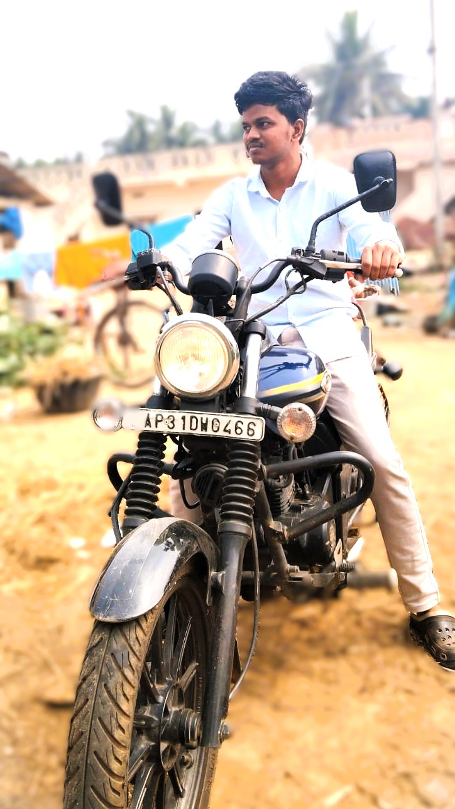

-
- About Me
-Hello! I'm an MSc Computer Science student passionate about web development. I build clean, responsive websites and I'm currently learning React and backend development. Open to freelance projects and internships!
+
+
- 
+
+
About Me
+Data-focused computer science graduate student
+Hello! I'm Surya, an MSc Computer Science student preparing for data science and data analytics opportunities. My background in web development helps me build user-friendly dashboards, data tools, and portfolio projects that make analysis easy to understand.
+I am strengthening my Python, SQL, statistics, visualization, and machine learning foundations while continuing to publish practical work on GitHub.
+